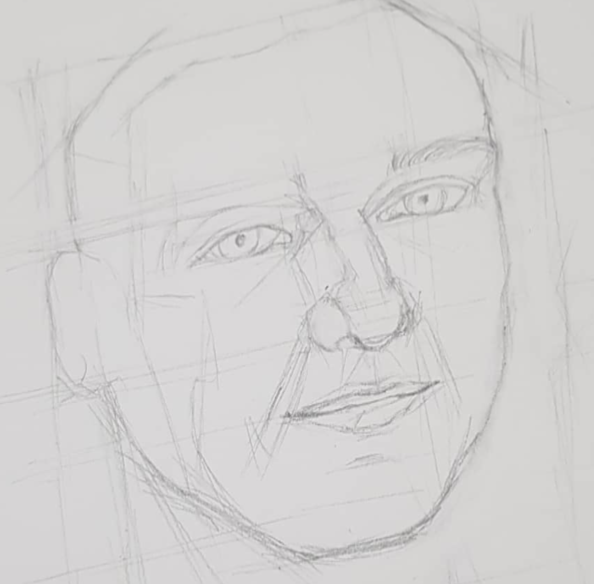

Before learning the proper way to blocking (sketching to gauge positions of facial features), I drew right away with solid lines.
Please observe the hard lines i used to outline the face shapes and features. While it outlines the boundaries clearly, it does not look realistic and aesthetic.
Hence, I learned to block properly with reference to the following videos.
trying blocking using the reference video
